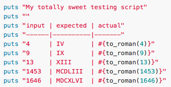

Background
So if you have been following my blog or paying attention to when these blogs are updated, you would have known that today was my very first day at DevBootCamp. To see a snapshot of what we did today, please check out this post, whereas this particular post will deal with the types of challenges we faced today.
Problem
Today we were given a set of challenges that all had one common factor, using Ruby to convert from one thing into something else. As there are no actual 'primitive' types in Ruby, we dealt with converting different types of objects.
One of the problems we were given was the Roman Numerals challenge, where we would create a method that would take an integer and convert it to a roman numeral. Since roman numerals are instances of Strings in ruby, we were basically asked to convert Integers into Strings.
The actual problem is as follows:
Create a method to_roman that takes an integer parameter and outputs its equivalent as a Roman Numeral.
A test that you can use to determine if your solution worked is as follows:
Since the integers that we are used to seeing in the western world are known as arabic numerals, we will call integers as arabic_numeral for our solutions.